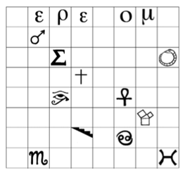

114. BÖLÜM
Yaklaşık on beş kilometre ötedeki Mal’akh, battaniyeyi Peter Solomon’ın etrafına sardı ve tekerlekli sandalyesini ay ışığının aydınlattığı bir parktan, dev bir binanın karanlığına götürdü. Yapının dış cephesinde tam otuz üç sütun vardı... her biri tam olarak otuz üç ayak77 yükseklikteydi. Heybetli bina bu saatte boştu, o yüzden onları kimse görmeyecekti. Hoşgörse de fark etmezdi. Kimse kel kafalı, bir kötürümü akşam gezintisine çıkaran uzun boylu, nazik görünüşlü, bir adamdan şüphelenmezdi.
Arka girişe vardıklarında Mal’akh, Peter’ın sandalyesini güvenlik tuş takımının yanına götürdü. Küstahça bakan Peter’ın şifreyi girmeye niyeti yok gibiydi.
Mal’akh kahkaha attı. “Beni içeri sokacağın için mi buradasın sanıyorsun? Kardeşlerinden biri olduğumu ne çabuk unuttun?” Uzanıp, otuz üçüncü dereceye yükseldikten sonra kendisine verilen giriş kodunu girdi.
Ağır kapı tıklayarak açıldı.
Peter inleyerek sandalyede kıpırdanmaya başladı.
Mal’akh, “Peter, Peter,” diye mırıldandı. “Katherine’i düşün. İşbirliği yap ki, yaşayabilsin. Onun hayatını kurtarabilirsin. Sana söz verdim.”
Esirini sandalyesiyle içeri taşıyan Mal’akh’ın kalbi heyecandan hızla atarken, kapıyı arkalarından kilitledi. Peter’ı birtakım koridorlardan geçirerek asansöre götürdü ve çağırma düğmesine bastı. Kapılar açılınca asansöre bindiler. Ardından, Peter’ın ne yaptığını görmesi için uzanıp en üstteki düğmeye bastı.
Peter’ın ıstıraplı yüzünde derin bir korku ifadesi belirdi.
Asansörün kapısı kapanırken, Peter’ın tıraşlı başını nazikçe okşayan Mal’akh, “Şş,” diye fısıldadı. “Sen de iyi bilirsin... işin sırrı ölümün nasıl olduğunda...”
Tüm sembolleri hatırlayamıyorum!
Langdon, taş piramidin tabanındaki sembollerin yerlerini hatırlayabilmek için gözlerini kapatıp, elinden geleni yaptı ama onun ezberci hafızası bile bu kadarını beceremiyordu. Hatırlayabildiği birkaç sembolü yazdı ve Franklin’in sihirli karesinde gösterilen yerlerine yerleştirdi.
Ama şimdilik mantıklı gelen hiçbir şey göremiyordu.

Katherine, “Bak!” diyerek onu cesaretlendirmeye çalıştı. “Doğru iz üstünde olmalısın. İlk sıranın hepsi Yunan harşerinden oluşuyor; aynı türden semboller yan yana geliyor!”
Langdon da bunu fark etmişti ama bu biçimde yerleştirilmiş harşere uyan Yunanca bir kelime hatırlayamıyordu. İlk harfe ihtiyacım var. Sihirli kareye bir kez daha bakarak, ilk harfe denk düşen sol alt köşenin yanındaki sembolü hatırlamaya çalıştı. Düşün! Gözlerini kapatıp, piramidin tabanını hayal etmeye çalıştı. En alt satır... sol köşenin yanında... orada hangi harf vardı?
Langdon bir an için yeniden tanka dönmüş, dehşetle pleksiglasın altından piramidin tabanına bakıyordu.
Sonra bir anda gördü. Derin nefesler alarak gözlerini açtı. “İlk harf H!”
Langdon kareye geri dönerek ilk harfi yazdı. Kelime hâlâ tamamlanmamıştı ama bu kadarı da yeterdi. Birden, kelimenin ne anlama gelebileceğini fark etti.
Heredom!
Kalbi kulaklarında atan Langdon, BlackBerry’de yeni bir arama başlattı. Bu ünlü Yunanca kelimenin İngilizcedeki karşılığını yazdı. İlk çıkan sonuç bir ansiklopedi sayfasıydı. Okuyunca, doğru olduğunu anladı.
Heredom! Farmasonluğun “yüksek derecelerinde” önemli bir kelime. İskoçya’daki efsanevi bir dağa atıfta bulunan Fransız Rose Cruix78 ritüellerinden. İlk Bölüm’de geçen efsanevi yer. Yunanca, Heredom! Kutsal Ev anlamındaki Hieros-domos kelimesinden gelir.
Langdon biraz şüpheyle, “İşte bu!” diye bağırdı. “Gittikleri yer burası!”
Onun omzunun üstünden yazıyı okuyan Sato, hiçbir şey anlamamış görünüyordu. “İskoçya’daki efsanevi bir dağa mı gittiler?!”
Langdon başını iki yana salladı. “Hayır, kod adı Heredom olan, Washington’daki bir binaya.”